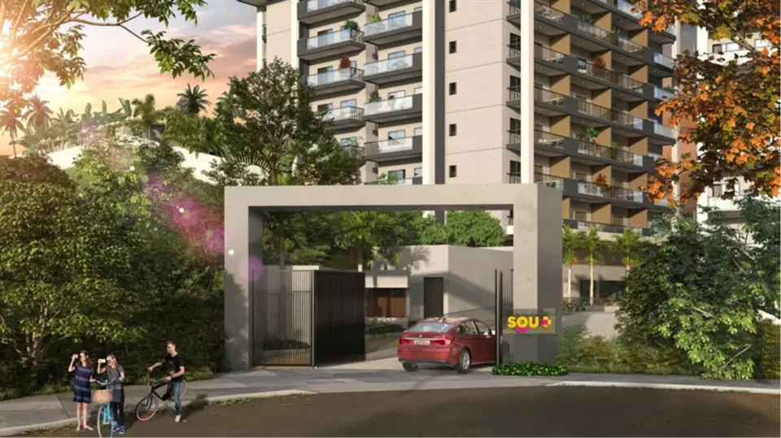

Studios
Antecipe-se e reserve o seu Sou + Icaraí, muito mais que um apartamento, somos um estilo de vida. Studios com varanda gourmet e garagem, 40 m², que podem ser unificados, sem custo adicional, para 2 ou 3 quartos, 80 e 120 m², com 2 ou 3 vagas. Magnifica vista da Praia de Icaraí e uma infraestrutura de lazer e serviços para atender seu estilo de vida.
Metragens, tipologias e disponibilidade conforme material oficial da incorporadora, sujeitos a alteração sem aviso. Valores e condições confirmados na tabela vigente. Seleção e atendimento: Paulo Cotrim, CRECI-RJ 77677-F.